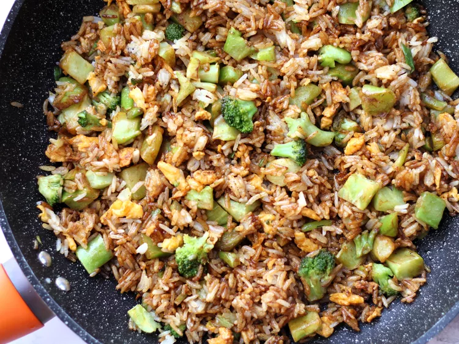

Fry Rice Recipe

Description
This is a easy dish you can make in under 30mins. With much servings of fry rice to fill your meal.
Ingredients
- 1 ½ cups uncooked long-grain rice
- 1 tablespoon vegetable oil
- 1 (16 ounce) package frozen broccoli florets, thawed
- 3 green onions, diced
- 2 eggs, beaten
- 2 tablespoons soy sauce
- ½ teaspoon salt
- ¼ teaspoon ground black pepper
Steps
- In a saucepan, bring 3 cups water to a boil. Stir in rice. Reduce heat, cover, and simmer for 20 minutes.
- Heat oil in a large skillet over medium heat. Saute broccoli until tender crisp, and add scallions. Remove from skillet. Scramble eggs; return broccoli mixture to pan. Stir in cooked rice, soy sauce, salt and pepper.
Back to index